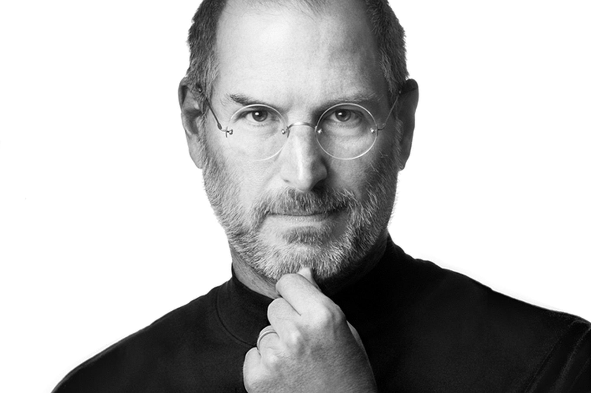
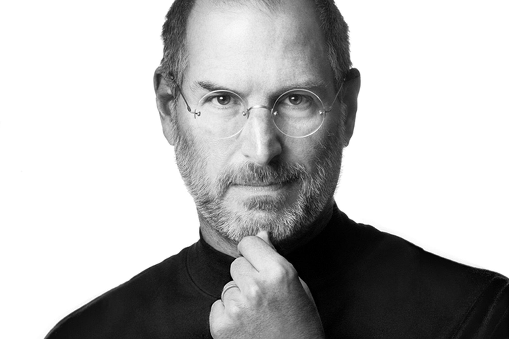

Visionary Innovator & Entrepreneur
"Innovation distinguishes between a leader and a follower."

Famous Quote
"Design is not just what it looks like and feels like. Design is how it works."
Biography
Steve Jobs was an American business magnate, industrial designer, and the co-founder, chairman, and CEO of Apple Inc. He was also the CEO and majority shareholder of Pixar, which later merged with Walt Disney Studios.
Known for his visionary leadership, Steve Jobs transformed the technology landscape by introducing groundbreaking products such as the iPhone, iPod, iMac, and iPad. His focus on design, simplicity, and user experience made Apple a global leader in innovation.
Life Milestones
- 1976: Co-founded Apple Inc.
- 1984: Launched the first Macintosh computer.
- 1986: Acquired Pixar Animation Studios.
- 1997: Returned to Apple as CEO, revitalizing the company.
- 2007: Released the first iPhone, revolutionizing the smartphone industry.
- 2011: Passed away, leaving behind a legacy of innovation.
Gallery

 
